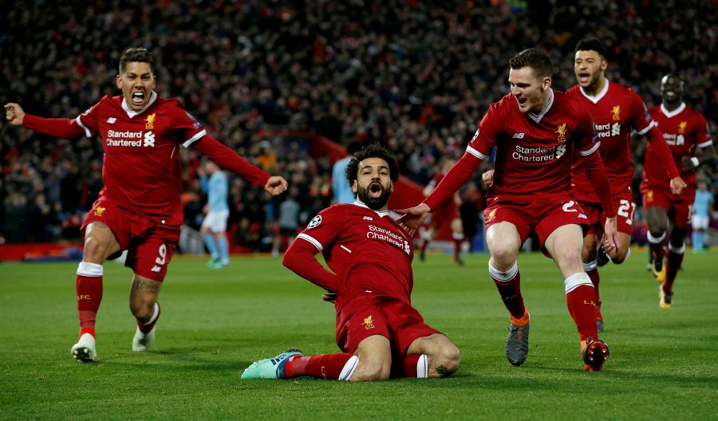
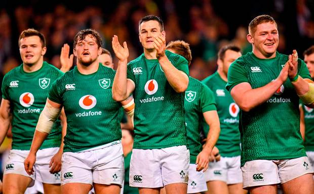

My favourite sport is soccer. I train with my local team twice a week and have a match every Saturday. We are currently pushing for promotion to the top division for our age group so that is taking over my life at the moment. I support Liverpool FC in the English Premier League and also have a keen interest in Cork City in the Airtricity League(league of Ireland). I occasionally attend Liverpool games due the cost of flying over and back, attending my last two years ago in March. Yet I am a regular fixture at Cork City games going every Friday home game that I can. To say I am a soccer fanatic would be an understatement.
I also have a strong interest in rugby. I am a Munster fan and of course an Ireland fan. I used to play rugby when I was in school but gave it up due to soccer commitments. My interest in the sport however has not faded, I am eagerly anticipating this years Rugby World Cup in Japan and hope that Ireland can go all the way. I am also keeping a close eye on the Munster teams progress in both the Champions Cup and the Pro 14.
Another one of my passions is boxing. Although I have never competed in boxing I am a loyal fan of the sport. I most recently watched the IBF Heavyweight title fight between Deontay Wilder and Tyson Fury. The match ended in a draw but the pulsating back and forth exchanges made it a classic. Tyson Fury rose from the canvas twice, the second of which appeared to have had him unconscious, and draw the fight. It was truly inspiring to watch it happen. Although that was one of my favourite fights of all time my favourite fighter is undoubtedly Anthony Joshua.